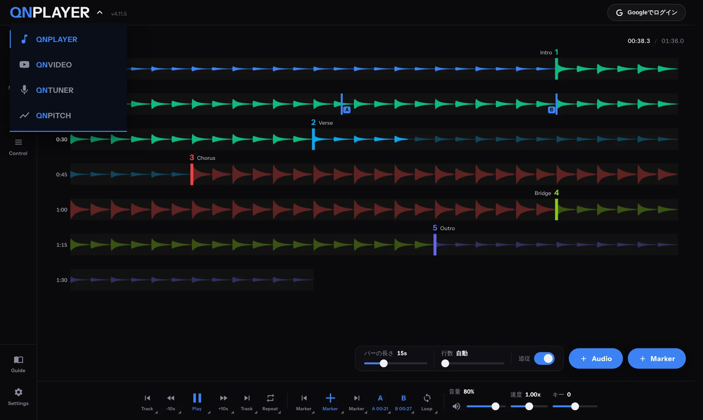

APPS
アプリの切り替え
同じ画面から、ほかのアプリに切り替えられます。
QNPLAYER は、同じ画面から、練習に使えるほかのアプリに切り替えられます。
| アプリ | できること |
|---|---|
| QNPLAYER | 手持ちの音声ファイルを、マーカーやループで練習するメインのプレイヤーです。 |
| QNVIDEO | YouTube の動画を、マーカー、A-B ループ、Skip で練習するプレイヤーです。速度の変更と、動画ごとのメモ（Text）が使えます。 |
| QNTUNER | マイクで音を聴き取る「チューナー」と、基準の音を鳴らす「Tone Generator」です。ギター、ベース、ウクレレ、管楽器のプリセットがあります。 |
| QNPITCH | 歌や楽器の音程をピッチロールで表示し、録音して見返せます。音程のズレのハイライトや、スコア表示もあります。 |
切り替え方
- ロゴを押す 画面左上のロゴ（「QN」とアプリ名、下向きの矢印付き）を押します。パソコンでは、カーソルを重ねても開きます。
- アプリを選ぶ
ロゴの真下に一覧が開きます。いま開いているアプリが強調されます。使いたいアプリを選びます。

ロゴを押すと、アプリの一覧が開きます。 - PLAYER に戻る 同じロゴから、QNPLAYER を選びます。
- 一覧は、画面の外側をタップするか、Esc キーで閉じます。
- アプリを開いている間、QNPLAYER の再生は一時停止します。キーボードショートカットも、開いているアプリのものに切り替わります。
- ページを再読み込みしたときは、最後に使っていたアプリが開きます。
- アプリを開いているときも、Settings の下の「More」にある Guide から、このガイドを開けます。
アプリ共通のこと
- サイドメニューの下段は、どのアプリでも共通です。カラー（テーマ色）とキーボード（ショートカット一覧）は、QNPLAYER と同じものが開きます。
- バックアップとインポートも、QNPLAYER と共通の画面です。QNVIDEO のライブラリや、QNPITCH の録音も、一緒に保存・復元できます。
QNVIDEO について
- YouTube の動画の URL を貼り付けて、Library に保存します。マーカー、A-B 点、Skip、メモは動画ごとに保存されます。
- YouTube の公式の埋め込みプレイヤーを使っています。そのため、波形の表示、キーの変更、EQ はできません。
- 動画の音声や映像は、保存もダウンロードもしません。保存されるのは、URL、手入力したタイトル、マーカー、A-B 点などです。
QNTUNER について
- マイクを使うので、初回はブラウザからマイクの許可を求められます。許可しないと、チューナーは動きません。
- ズレは 3 段階の色で表示されます。表示は、ゲージとギターメーターから選べます。
- 弦の行を押すと、その弦の基準音が鳴ります。もう一度押すと止まります。
QNPITCH について
- Rec で録音を始め、停止すると、録音が読み込まれます。Play で再生して、Save で保存します。
- 保存した録音は Recordings に並び、名前の変更や削除ができます。
- Filters で、急変のスキップ、ノイズの除去、ビブラートの検出などを調整できます。